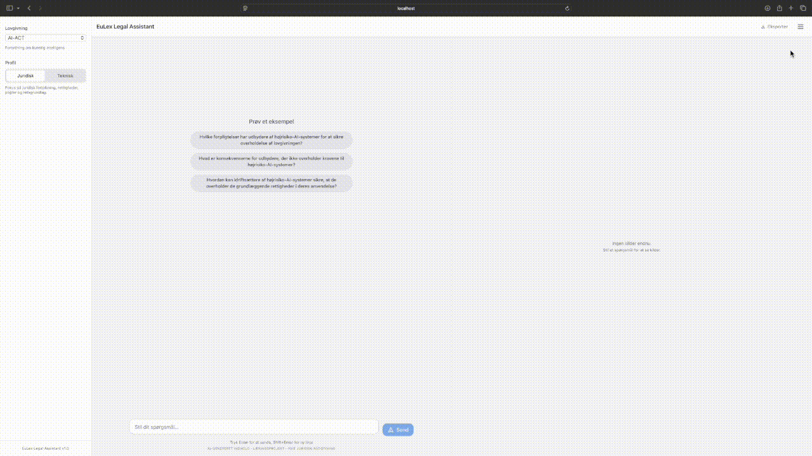
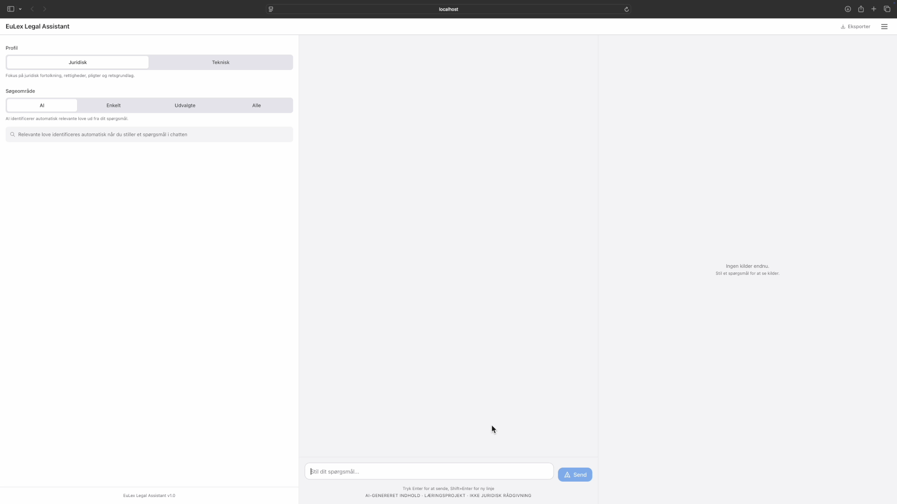
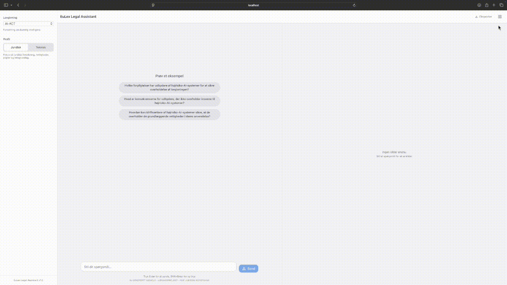
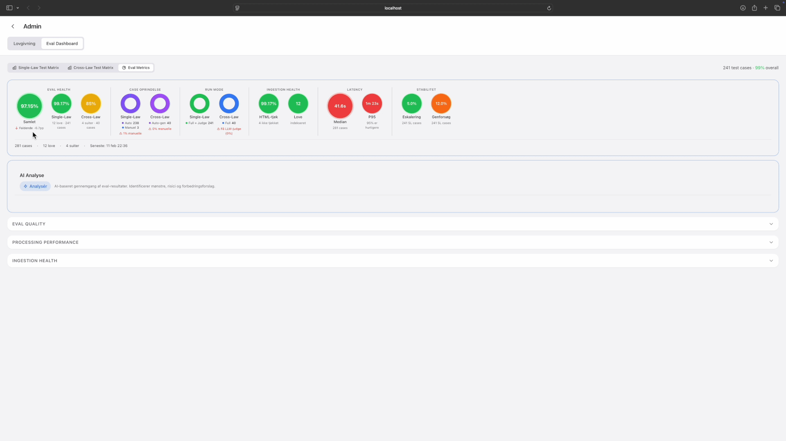

EuLex RAG
A legal Q&A system for EU regulations that would rather say "I don't know" than cite the wrong article.
Hybrid retrieval across 12 EU laws, fail-closed citation validation, and an evaluation framework that auto-generates test cases during ingestion.
How it started
I'd been using AI tools for a while, and over summer 2025 started building: workflow automation with Make and OpenAI, a demand/supply analysis in Python with GitHub Copilot at work. Useful, but surface-level. I wanted to understand how LLMs actually work with external knowledge, not just use them. RAG felt like the right place to dig in: retrieval, augmentation, generation. It's the core pattern for grounding LLM output in real data, and it stays relevant even as context windows grow, because controlling which content the model answers from is a governance question as much as a technical one.
I chose EU legislation as the domain because it's a problem I kept running into in IT: what do the AI Act, DORA, and NIS2 actually mean for software development requirements? The laws are complex enough to stress-test every part of a retrieval pipeline, and getting a citation wrong in legal text has real consequences.
EuLex was my first private project. This is where the "prompt, fix, prompt, fix" cycle started that eventually grew into Watchfloor. Every frustration during this build became a feature in the pipeline later.
What it does
EuLex answers questions about EU legislation with verified article citations. It currently covers 12 EU laws (AI Act, GDPR, DORA, NIS2, Data Act, and others) and supports cross-law queries: "Which regulations are relevant for cybersecurity?" retrieves across all corpora, merges results, and synthesises a multi-law answer with per-article citations.
New EU laws can be ingested through the browser UI. The ingestion pipeline fetches legislation from EUR-Lex, chunks it along legal structure boundaries (articles and paragraphs, not fixed token windows), enriches chunks with LLM-generated search terms, and builds a citation graph capturing cross-references between articles.

Self-service ingestion: browsing EUR-Lex, running preflight checks, adding new legislation. Tap to expand.
How retrieval works
All three run in parallel, results merge into hybrid reranking.
If any citation can't be verified against the retrieved articles, the system refuses to answer.
The citation graph carries the highest weight because legal text is inherently structured. When Article 6 references Annex III, those should be retrieved together. Pure vector search misses this. Pure keyword search misses paraphrases. The hybrid approach catches both.

Cross-law query: "Hvilke love er relevante for cybersikkerhed". Corpus discovery, multi-law retrieval, verified citations. Tap to expand.
How evaluation works
The evaluation pipeline calls the exact same functions as the production API. There's no separate "test mode" with different behaviour. 296 golden test cases go through multi-stage scoring: anchor presence, response format compliance, citation verification, and LLM-as-judge checks for faithfulness and relevancy. The interesting part is that 278 of those cases are auto-generated during ingestion. When a new law is added, the pipeline creates test cases from the legislation itself. In a production setting those would need an expert-crafted layer on top, but the auto-generated baseline catches regressions immediately.
An honest caveat: auto-generated cases validate consistency, not legal accuracy. The system is tested against itself, not against a qualified lawyer's assessment. Expert-crafted adversarial cases would tell a different and more useful story.

Eval dashboard: matrix view of test results by law, expanding to see LLM-judge scores. Tap to expand.

Eval metrics: drilling from overview through quality, performance, and ingestion health. Tap to expand.
Adding case law
The biggest gap in EuLex today: it provides statute only, not case law. Professional legal tools (Karnov, Westlaw, LexisNexis) pair legislation with court interpretations. Understanding a regulation means knowing not just what it says, but how courts have applied it.
The Court of Justice of the European Union (CJEU) is the EU's highest court. Its rulings set precedent for how regulations are interpreted across member states. The ingestion side of the extension has shipped:
- Fetching CJEU decisions from the EU's CELLAR publications API
- Parsing case structure: case number, date, the court's core reasoning, and supplementary observations
- Structure-aware chunking and citation enrichment, so judgments link to the articles they interpret
What remains is the retrieval side: indexing a full judgment corpus with article-to-case lookup, including case law in synthesised answers ("Article 6 of the AI Act, as interpreted in Case C-xxx..."), and anti-hallucination validation. The LLM must not invent case numbers, which is a real and documented risk.
The primary constraint isn't the data pipeline. It's validating that the system doesn't hallucinate case references. In legal Q&A, a made-up case number is worse than no answer at all.
Reflections
The instinct when building a Q&A system is to always return an answer. Legal Q&A inverts that instinct. The correct behaviour is often to refuse. Building a system that says "I don't know" meant fighting every optimisation that improved recall at the expense of precision. The "insufficient evidence" response appears more often than feels comfortable, and that is the feature, not a bug.
Structure-aware chunking turned out to matter more than chunk size. Fixed-size token windows break legal text in the wrong places. An article that spans 2,000 tokens should not be split arbitrarily, because paragraph boundaries and cross-references carry meaning. EuLex chunks along legal structure, so chunk sizes vary wildly, but each chunk is a coherent legal unit.
Two limitations are still open. The fail-closed citation validation holds well on single queries, but follow-up questions in a conversation carry implicit context that gradually erodes the abstention guarantee. And as noted above, auto-generated eval cases test consistency, not legal correctness.
The patterns that emerged here apply beyond legal Q&A. Controlling which content a model can answer from, refusing to answer rather than guessing, and building evaluation into the ingestion pipeline rather than bolting it on afterwards. Any organisation deploying RAG in a regulated domain will face the same design decisions. I built them for EU law, but the governance questions are the same for financial compliance, medical guidelines, or internal policy.
What went wrong
EuLex went through 11 refactoring phases. TOC routing and concept routing were built and then cut when their complexity exceeded their benefit. Streamlit was replaced with React when it couldn't support the eval dashboard and ingestion flows I needed. That trade-off added real complexity to the project, but it was the right call. Other features were simply removed. The final system is simpler than it was at phase 6 and significantly better.
The project was initially built prompt, fix, prompt, fix. That approach left marks. The main module grew to 10,000 lines before I refactored it down to a slim orchestrator with proper separation. The first several phases had no tests. Retrofitting them was slow and uncomfortable. But both problems acted as feedback loops. The god-module experience is why the Watchfloor pipeline now enforces module boundaries through architecture review. The missing-tests experience is why it enforces TDD with a pre-commit hook that blocks code without a failing test first. Every frustration during this build became a rule in the pipeline.
View on GitHub
tomashermansen-lang/eulex-rag